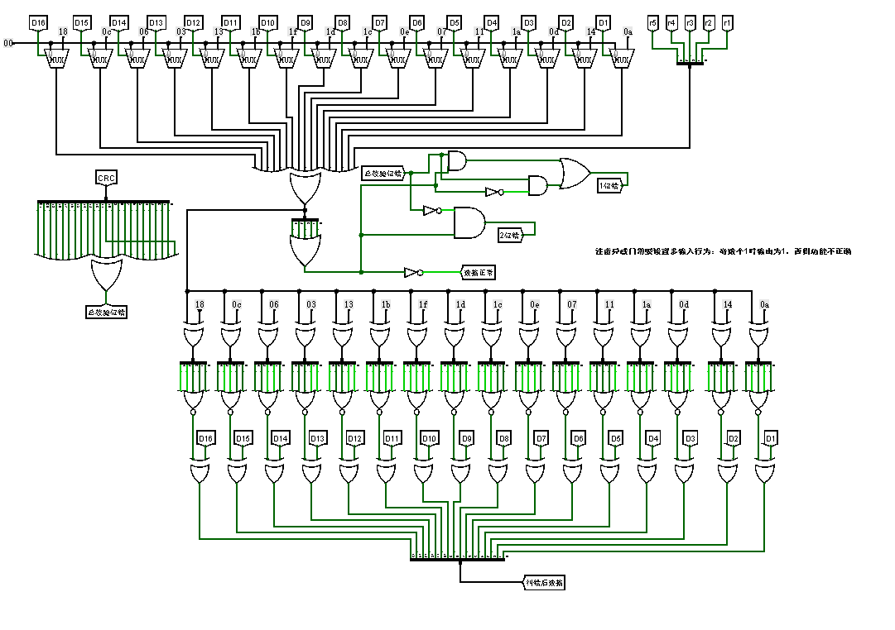
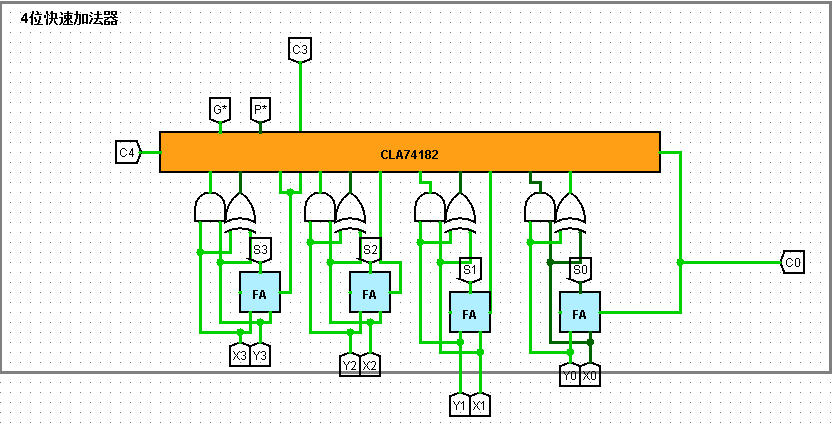
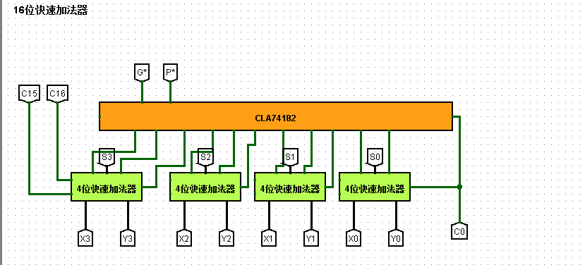
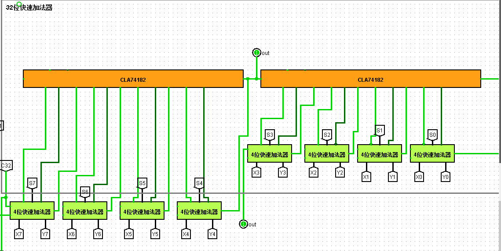

汉字编码实验
- 遇到的问题
- ansi与gbk的关系 utf-8.为什么gb2312的文本格式要以ansi存盘
- -A0A0的补码dfe0
- gbk转十六进制代码 hexString
- 以上问题有一个综合答案，为什么要半角转全角？因为国标转区位码电路是针对中文字符的电路，如果用半角的电路，在字库中找不到对应的字符，自然就显示不了当前字符。其他的细枝末节就不用关心了。例如，逗号句号的全角半角，这些都不重要。
海明编码实验
- 遇到的问题
- 为什么p6要与所有的输入相异或
- g6的总偶校验实现原理是什么？
- p6和g6的关系是什么？(奇偶校验的原理)
- 解决的问题：
- 回顾了一下解码器，通过真值表的最小项相或画电路图。
- 想了一下，无论任何电路，增加一位总的奇/偶校验位，就可以验证总的编码是否出错.(该实验一是将偶校验用在了海明编码电路中p6,而是将偶校验用在了海明解码电路中G6)
crc编码实验

- 思路：链接
- 公式:
- 模二运算的的异或取余公式
- 校验公式：先不看电路，刚开始，传过来的crc编码按位取反(也就是异或),和生成多项式G(x)模2除，如果生成的余数为0(首先保证只有一位错的情况)，那么对应位一定有错，因此将余数取反，此时的余数为1，在与该数据位异或，即可纠正该数据位。
- 通俗点讲，第一步，将crc编码按位取反与Gx模2运算，根据公式1该公式可以化简为(crc%gx)^(该数据位取1%gx)，接下来，对应位会生成1位余数，如果该余数位0，说明该位有错，然后将该位取反。如果为1，说明该数据位没有错误。(x^0=x,x^1=-x)
- 遇到的问题
- 模2运算是什么 √
- 回顾补码
快速加法器
- 看法:
- 对G,P的解读，在四位先行进位电路中，其输入引脚Gi和Pi分别是一位相加后生成的先行进位信号。同理，G星和P星就是四位一组的先行进位信号.
- 对第一点的进一步解读，G和P的推导是由公式Ci=XiYi+(Xi^Yi)Ci-1得来的，其中G看成是XiYi,P看成是Xi^Yi,也就是说，就算要推导，也应当从进位公式得出。那么，再看C4=G4+P4G3…..,这就是四位一组的先行进位公式，将G※看作是….,P※看作是….
- 对8位可控加减法的无符号加法和减法的溢出的检测。加法很明显，就是最高位进位，如果为1，那就是溢出。无符号减法的溢出在最高位进位加一个非门。因为无符号减法同样是对减数y(表达式x-y)取反再加一，可以随便找两个二进制数试一下，切记，y取反再加一之后，就变成了x+y^，这里的y^是改变过后的y.
四位快速加法器->十六位快速加法器->三十二位快速加法器
四位

十六位

三十二位

RAM实验
记录
字库电路 字扩展
- 字扩展(容量扩展),地址线的高两位用来片选。
- 下面七个ROM相当于是位扩展，各自提供各自的数据位，全部选通。上面的四个ROM相当于字扩展，同一时刻，只有一个ROM被选通。
- 这里再解释一下。四个12*4B的ROM相当于是由一个16x4B的ROM分裂而来，顺过来想，总的存储容量没有发生改变，相当于把存储容量除以了4.那么字扩展为什么能扩大容量呢。这里逆过来想就行了，如果手中有四个独立的12x4B的ROM，想要组成一个容量更大的ROM，只有通过字扩展来实现，12根地址线，10根拿来做地址选通，后两根拿来做片选信号。
- 最后片选功能的实现可以用译码器实现，也可以用多路选择器实现，原理一样。
MIP RAM实验
- 本质上的位扩展实验。
- 其中字节选通功能和字库电路中的字扩展功能相同，该实验中，因为有12根地址线，四个10*1B的ROM，还剩下两根地址线，恰好做片选。
- 字节选通功能和位扩展又不大相似，位扩展是每一个ROM都提供各自的位，最后组成总的数据位。字节选通相当于又回到了字扩展，因为单位时间内只有一个ROM提供数据，至于是哪个ROM，经过片选决定。
- 待解决问题:为什么RAM测试电路中没有时钟信号。
单周期MIPS CPU实验
- 隧道tunnel只能用在同一个电路中 不能跨电路使用
- 异或门的属性，缺省是错误的?